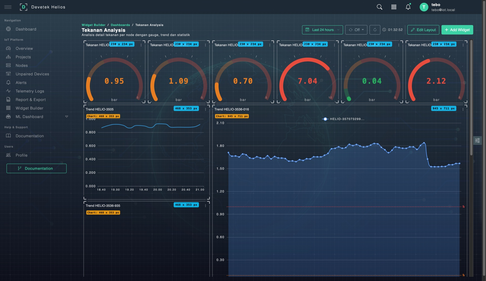

DASHBOARD
Dashboard & Widget Builder
Bangun dashboard sesuai kebutuhan operasi Anda. Drag & drop widget, SQL editor bawaan, dan dual data source untuk fleksibilitas penuh.
6+ Tipe Widget
Bar, line, gauge, pie, stat card, table — pilih sesuai kebutuhan
Dual Data Source
PostgreSQL untuk metadata, ClickHouse untuk time-series
SQL Query Editor
Tulis query langsung atau gunakan template wizard
10 Kategori Dashboard
Template bawaan untuk berbagai kebutuhan monitoring
Real-time Refresh
Auto-refresh 5s – 60s, configurable per widget
Unlimited Widget
Tidak ada batasan jumlah widget per dashboard
